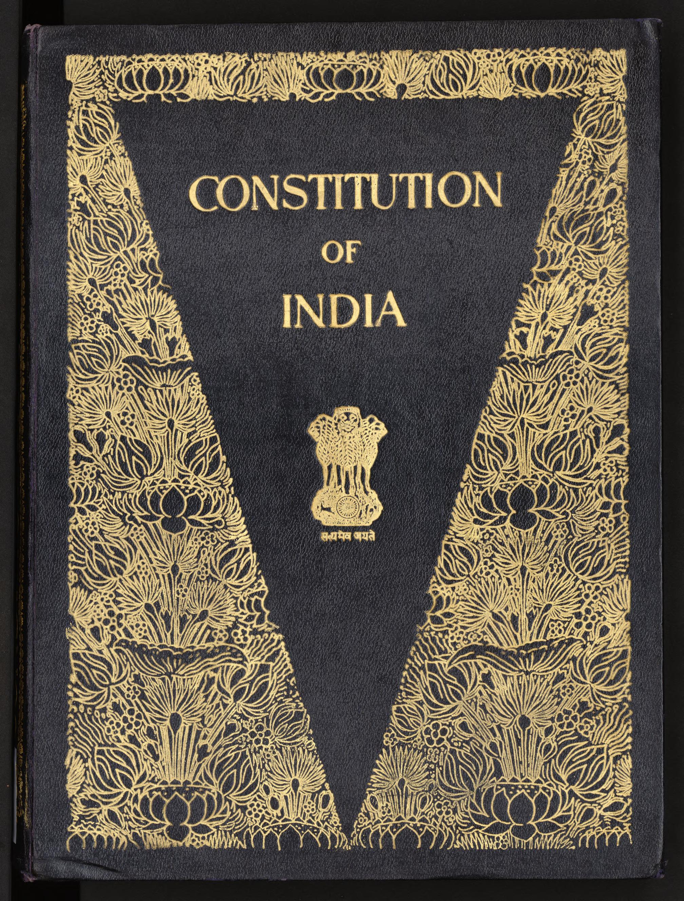
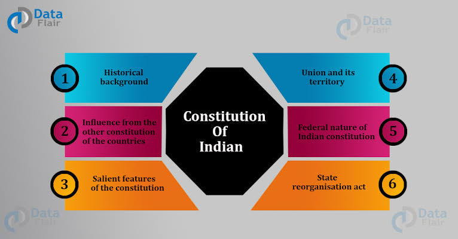
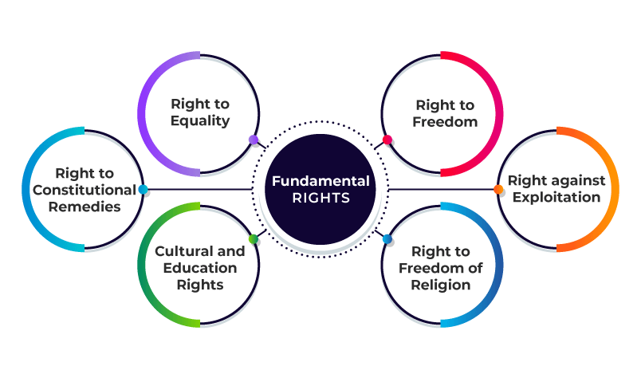
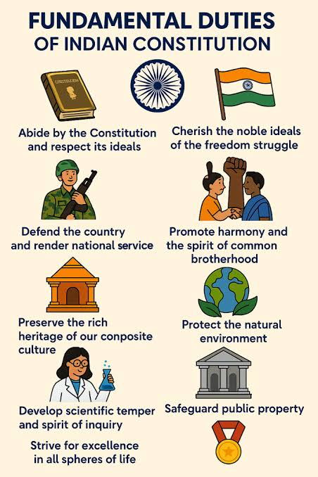

About the Constitution

The Constitution of India is the supreme law of India. It came into effect on 26 January 1950. It defines the structure of the government and the rights and duties of citizens.The Preamble to the Constitution declares India a "Sovereign, Socialist, Secular, Democratic Republic" that secures justice, liberty, equality, and fraternity for its people.It establishes a parliamentary system of government with powers distributed between the central Union government and individual state governments.The original manuscript of the constitution was handwritten in both Hindi and English and took nearly three years to finalize. Dr. B.R. Ambedkar served as the chairman of the Drafting Committee and is widely regarded as the chief architect of the Indian Constitution.
Key Features

Lengthiest Written Constitution:
It originally contained 395 articles and 8 schedules, balancing detailed administrative provisions with fundamental principles.
Blend of Rigidity and Flexibility:
Some provisions require a special majority to amend, while others can be changed by a simple majority.
Federal System with Unitary Bias
: It establishes a two-tier government system but grants strong overriding powers to the central government.
Parliamentary Form of Government:
Executive power is held by a Cabinet responsible to the legislature, based on the British Westminster model
Fundamental Rights

Right to Equality (Articles 14–18):
: Guarantees equal treatment before the law and bans discrimination based on race, religion, caste, sex, or place of birth.
Right to Freedom (Articles 19–22):
Guarantees freedom of speech, assembly, association, movement, residence, and profession.
Right against Exploitation (Articles 23–24):
Prohibits human trafficking, forced labor (begar), and employment of children under 14 in hazardous jobs.
Right to Freedom of Religion (Articles 25–28):
Ensures freedom of conscience and the right to freely profess, practice, and propagate any religion.
Cultural and Educational Rights (Articles 29–30):
Protects the distinct language, script, and culture of minorities and grants them the right to run educational institutions.
Right to Constitutional Remedies (Article 32):
Empowers citizens to move the Supreme Court to enforce their rights via writs like Habeas Corpus and Mandamus
Fundamental Duties

Every citizen should respect the Constitution, protect the environment, and promote harmony among all people.
Visit the official website: Constitution of India